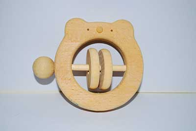
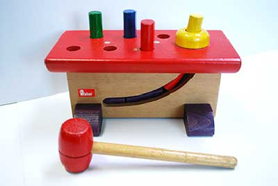

くすのきの「想い」
私たちは、木工職人の父と息子、数名のスタッフで制作から販売まで担っています。
「親が小さい頃に大切にしていたものを子供が使う」といったように、木製製品を長く愛用してほしいと想い、
材質にこだわっています。また、長く愛用している間に壊れてしまった大切な木製品の修理も受け付けています。

木は、同じ種の木材であってもその木の産地や生育状況により同じものが２本と存在しません。
世界に唯一しかないおもちゃを、子や孫の代まで受け継いで行きたい。そのような想いで日々制作・修理に取り組んでいます。というサンプルテキストです。
オススメ


